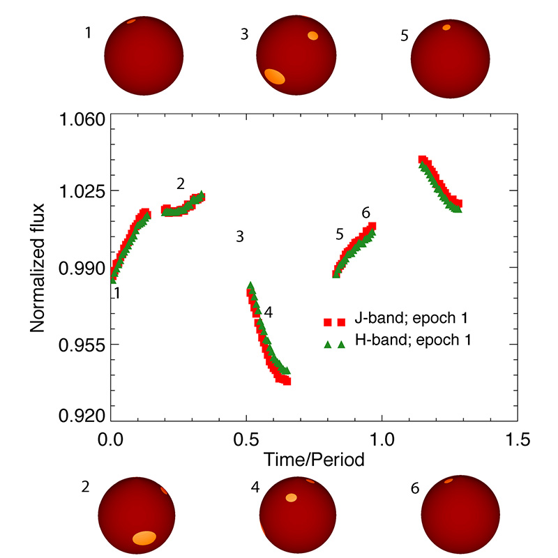
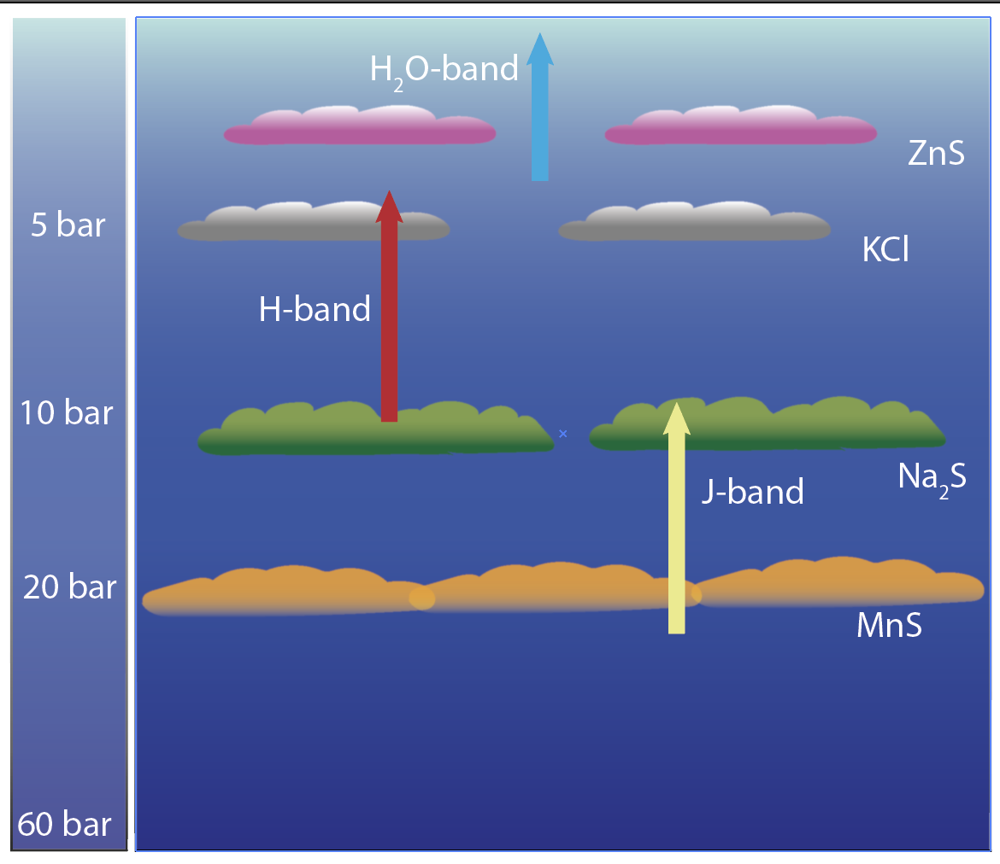

My research
I am a theoretical astrophysicist interested in the characterization of brown dwarfs and exoplanets. My work focuses on trying to understand more about these exciting objects by modeling their flux and polarization spectra and mapping their atmospheres (and potentially surfaces). I am an Assistant Professor in the Physics department at the University of Central Florida.
How do we characterize these atmospheres?
With thousands of exoplanets and brown dwarfs detected to date, our goal has shifted from ‘just’ detecting more of these atmospheres to also trying to characterize them. By characterizing these atmospheres we try to answer a number of questions such as: Are there clouds in these atmospheres, and if so, where are these clouds and how are they organized (e.g., spots or bands )? If there are clouds, how do they change over time and what does that tell us about the atmospheric dynamics of our targets? Does the age, metallicity, gravity or another parameter affect how these atmospheres look like?
But how do we characterize a one-pixel atmosphere? To do that we compare our observational spectra (or photometry) with model spectra (photometry). Comparing our observations with a grid of models with different temperatures, gravities, cloud content etc, we find which model fits best our observations, and thus what the properties of the observed atmosphere are.
Why maps?
Directly Imaged brown dwarfs and giant exoplanets currently, and terrestrial exoplanets in the future, are just a pixel wide in our images. That pixel contains all the information on the atmosphere and (potentially) surface properties of our target. So how can we know whether our target has continents, oceans and patchy clouds like the Earth, a Great Red Spot like Jupiter or a cloud decked atmosphere like Venus? The solution to our problem is using time resolved observations, i.e., when we observe our target as it revolves around its axis. The disk-integrated light we receive from the (pixel-wide) target will vary as the target revolves around its axis due to different atmospheric and surface formations moving in and out of our field of view. The variation of the light curve, i.e., the light we receive from the target as it revolves around its axis, can thus be used as a tool to map the atmosphere (and possible surface) of the planet. With this in mind I developed Aeolus , a Markov-Chain Monte Carlo code that can map the atmosphere of our target, and its evolution over time, using observed light curves.
High resolution spectra for 3D maps
The existence of different species in an atmosphere like H2O, CH4 etc, with different vertical profiles, results in different amounts of light being absorbed at different wavelengths, and different pressures reached when we reach the center of an absorption line. Observing an atmosphere at different wavelengths allows us to probe different pressure layers in an atmosphere (see figure below). Hubble Space Telescope observations for example can give us the map of a brown dwarf atmosphere like Luhman 16B at deeper levels in the J-band, and higher up in the atmosphere in the H2O-band.
Using high resolution observations from the ground (or with JWST) we could use alkali lines like, for example, KI to map different layers in the atmosphere with different cloud structures in them. Indeed, high-resolution observations with MOSFIRE showed that the KI line changes differently than the continuum which could be due to different cloud configuration affecting the higher layers which KI is sensitive to.
Polarization: a useful tool to characterize exo-atmospheres
Reflected light The Holy Grail of the field of exoplanets is to find Earth 2.0, an other planet that like Earth can host life on its surface. A key ingredient to life as we know it, is liquid water. We thus classify as habitable, planets that have the appropriate conditions to have liquid water on their surface. The existence of liquid water on the surface of an exoplanet can be indirectly inferred by the presence of liquid water on the exoplanet atmosphere.
One of the ways we can detect liquid water clouds on an exoplanet atmosphere is with the use of polarimetric observations. The power of polarimetry in the characterization of an exoplanetary atmosphere was already shown over 40 years ago, with the retrieval of the cloud top pressure, composition and size distribution of cloud droplets in the upper Venusian atmosphere using ground-based, unresolved observations of Venus by Hansen & Hovenier (1974) . Polarimetric observations are a powerful tool that helps increase the planet-to-star contrast ratio, making it easier to directly detect an exoplanet, and that allows us to detect liquid water clouds on the exoplanetary atmosphere by allowing the detection of the rainbow of the liquid water clouds.
During my PhD in SRON and Leiden Observatory in the Netherlands I have worked on developing a radiative transfer code that models the flux and polarization spectra of terrestrial and giant exoplanets with heterogeneous cloud and, when applicable, surface coverage. You can get an open-access copy of my thesis here .
Simulating terrestrial exoplanets with heterogeneous liquid and ice cloud coverage with various configurations, my collaborators and I showed that the rainbow is a robust tool, that can be used to detect liquid water clouds on an exoplanet, even when optically thick ice clouds exist on the exoplanet atmosphere! Using MODIS observations from April 25th 2011 we simulated the Earth-as-an-exoplanet and showed that an alien observer could detect the existence of liquid water clouds if he/she/it was using polarimetric observations!
Of course, theory needs always data to back it up. To test whether the rainbow is indeed observable in the exoplanet-Earth signal we have proposed to create LOUPE , a small and robust polarimeter that can observe the Earth as if it were an exoplanet from the Moon.

Thermal emission Polarization is also a useful tool to characterize brown dwarf atmospheres. Some brown dwarf atmospheres have a wealth of clouds in their atmospheres but as they are hotter than the Earth or Jupiter they emit most of their light in the infrared. The polarization expected from such an atmosphere is lower than what we would expected for reflected star light (see polarization for more details) but, recently, instruments became sensitive enough to detect it!
Using such a sensitive polarimeter to observe Luhman 16AB, the nearest brown dwarf binary to our Solar system, and fitting the observations with models we detected banded clouds (like Jupiter's) on 16A. This was the first time that such an indirect detection of bands was possible with the help of polarization. Recently, I PIed a proposal that was awarded Hubble Space Telescope time to observe Luhman 16AB over a number of continuous rotations to directly detect these bands. If the existence of banded clouds is confirmed, polarization will offer a great (and cheaper) tool for detecting bands on exoatmospheres, and prioritizing them for characterization through follow-up (more expensive) space telescope observations. You can see a nice video explaining a bit more about our work here.